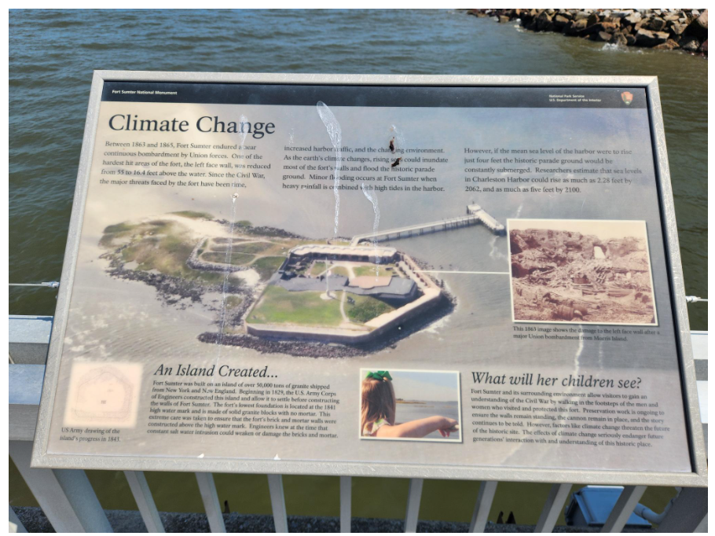
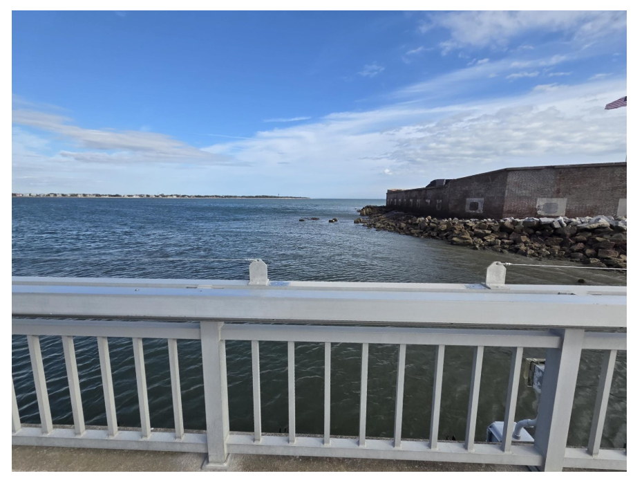
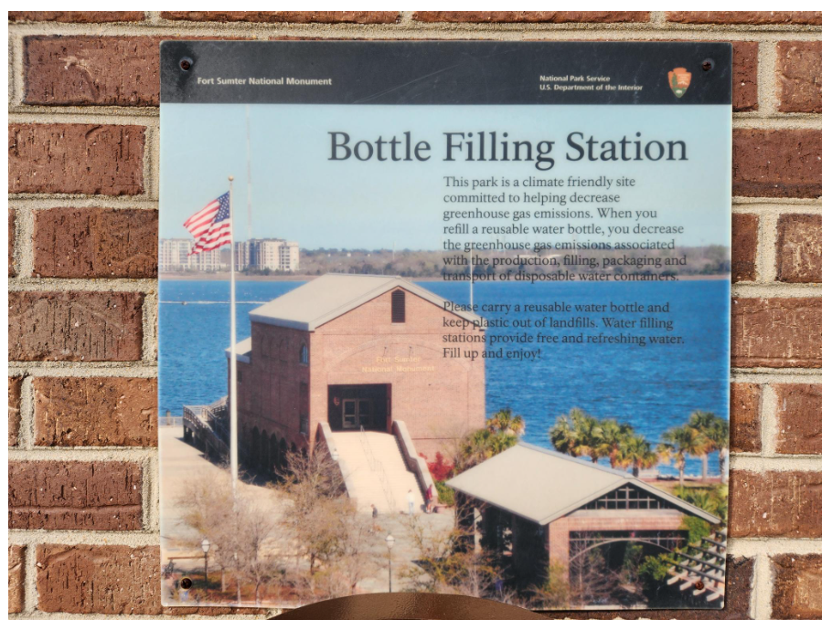
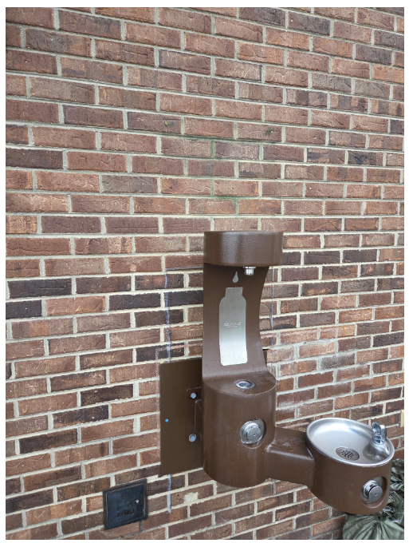
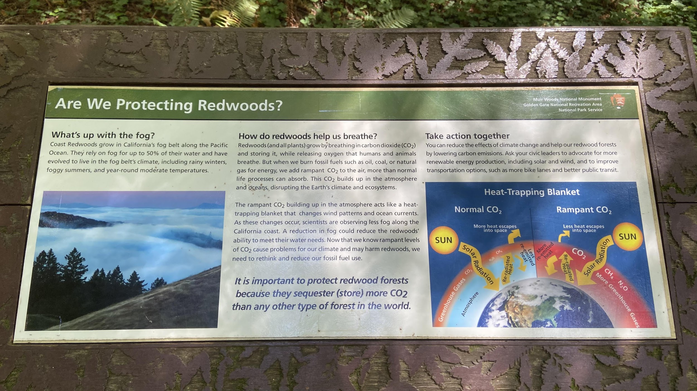

Climate Change Signs Removed from National Parks
67 interpretive signs and exhibits about climate science have been flagged or removed from 36 national parks under Secretary's Order 3431. Here's what's being erased and where.
Across 36 national parks, 67 interpretive signs and exhibits related to climate science and environmental change have been flagged under Secretary's Order 3431. Of these, 9 have been confirmed removed. The targets include signs explaining glacial retreat, rising sea levels, changing weather patterns, and threats to wildlife habitat.
The removals are concentrated in parks where climate change is literally visible to visitors. At Glacier National Park, five entries have been flagged and all five removed — including an entire season of the park's award-winning podcast, Headwaters, which covered climate science. At Acadia National Park, summit signs on Cadillac Mountain explaining more frequent storms and rising temperatures were taken down. At Muir Woods, a sign warning that climate change threatens the fog that redwoods depend on for water was removed.
The pattern is clear: signs that connect visitors to the scientific reality of what's happening to the land beneath their feet are being systematically removed. This isn't about "bias" — it's about erasing observable, measurable changes that visitors can see with their own eyes.
Interactive map filtered to climate and environment entries. Click any pin for details.


The "Climate Change" interpretive sign at Fort Sumter's pier explained how rising sea levels threaten the historic fort. Visitors now see only the empty railing and open water where the sign once stood.
Photos from Save Our Signs Removal Tracker
Fort Sumter was built in 1829 as part of a coastal defense program authorized by Congress after the War of 1812, designed to hold 650 soldiers and 135 artillery pieces. It became the site of the first battle of the Civil War on April 12, 1861. Today, the fort faces a different kind of threat. Charleston Harbor sea levels have risen approximately 9–10 inches since 1950, and tidal flooding in some areas has increased by 75% since 2000. The removed sign cited projections that a 4-foot rise would leave the historic parade ground "constantly submerged."
A 2016 NPS vulnerability assessment found that two-thirds of Fort Sumter's historic structures are highly vulnerable to coastal hazards, with an estimated replacement cost of $1.1 billion. The sign that explained these risks to 800,000 annual visitors is now gone.


Fort Sumter "Bottle Filling Station" — Climate-friendly messaging about reducing greenhouse gas emissions, removed December 2025
Photos from Save Our Signs Removal Tracker

Six signs on Cadillac Mountain and four at Great Meadow were removed from Acadia, including "Is There Refuge From A Changing Climate?", "Acadia is Changing and So Are We", and "Look Down." The signs described climate change impacts on the park and the connection of the Wabanaki nations to Cadillac Mountain. The removed signs — 10 tripod signs each containing 3 informational panels — are now stored out of sight behind a building on park grounds.
Before photo from Save Our Signs Removal Tracker · Reporting by Bar Harbor Story
The removed sign referenced the concept of "climate refugia" — geographic areas buffered from climate change where rare plant species can persist. Acadia's mountain summits, with their cooler microclimates and coastal fog, are among the last strongholds for subalpine species being pushed northward. The Gulf of Maine has warmed faster than 99% of the world's oceans — approximately 3°F over the past century, with 2°F of that in just the last 30 years.
The Wabanaki peoples — Penobscot, Passamaquoddy, Maliseet, and Mi'kmaq nations — have inhabited this region for at least 10,000 years. They call Cadillac Mountain "Wapuwoc," meaning "the first light white mountain," because it is the first place in the country where the sun's light hits each morning. Signs telling this story were removed alongside the climate signs. Ten state representatives from Maine wrote a letter demanding their return. See also: Indigenous History Censorship for more on the Wabanaki context.

"Are We Protecting Redwoods?" — This sign explained how coast redwoods depend on fog for up to 40% of their water, how fog frequency has declined due to warming oceans, and how visitors could take action on climate change. It has been confirmed removed.
Photo from Save Our Signs Archive
The climate threat to coast redwoods is direct and measurable. Redwoods depend on fog for roughly 40% of their water intake, absorbing moisture through their needles. Fog frequency at Muir Woods has declined by approximately one-third since the early 20th century. As fog retreats, redwoods lose a critical water source they've relied on for millions of years. The sign that explained this to over 2 million annual visitors has been removed.
Note: A separate historical exhibit at Muir Woods, "Saving Muir Woods," was also flagged for review. That sign — which covered the monument's founding by William Kent and President Roosevelt — had been annotated by park staff in 2021 with additional context about Indigenous history and the legacy of John Muir. The sticky-note annotations were ordered removed. That exhibit is tracked separately under General Historical Content.
Glacier National Park is perhaps the most visible example of climate censorship. All five flagged entries have been confirmed removed, making it the only park with a 100% removal rate. The removed materials include four interpretive signs — "Climate Change Affects National Parks," "Blame It on the Grain," "Fire on the Rise," and "Symbol of Controversy" — along with episodes of the park's Headwaters podcast that covered climate science.
Officials also removed brochures showing glaciers retreating, a video documenting glacier disappearance, and descriptions of how climate change is contributing to glacial loss. The "Blame It on the Grain" sign, located near the Sherburne Dam in Many Glacier, quoted NPS founder Stephen Mather calling the dam "a glaring example of what is to be avoided in national parks" — language that was flagged as potentially disparaging a past American.
A sign about the mass slaughter of the Piegan Blackfeet was also ordered removed, showing how climate censorship and Indigenous history erasure often overlap at the same parks. View on map →
Reporting by Hungry Horse News, Daily Montanan, Outside
The scientific consensus on climate change is not in dispute among researchers. NASA, NOAA, and the National Academy of Sciences all confirm that human-caused climate change is altering ecosystems across the country. A 2023 NPS study found that 235 of 289 parks analyzed (81%) are experiencing "extreme warm" conditions. These are not political opinions — they are measurements taken by park staff over decades.
Acadia: Temperatures have risen 3°F since 1890. Sea levels are up 8 inches since 1950. Peak fall foliage has shifted nearly two weeks later. One of every six plant species documented in the 1800s no longer exists on Mount Desert Island. (Friends of Acadia; Schoodic Institute)
Fort Sumter: Charleston Harbor's sea level has risen over a foot since 1921. A 2016 NPS vulnerability assessment found 65% of Fort Sumter's assets are "highly vulnerable" to climate change. A four-foot rise would permanently submerge the parade ground. The replacement cost for affected structures: $1.1 billion.
Glacier: The park had approximately 150 glaciers when it was established in 1910. Today, 26 remain. Between 1966 and 2015, individual glaciers lost up to 85% of their surface area. All continue to shrink.
Muir Woods: Coast redwoods obtain up to 40% of their water from fog through their needles. Fog at Muir Woods has declined by roughly a third since 1951, driven by warming oceans that disrupt the marine layer. Temperatures at the monument have risen 1.4°C per century.
Why parks matter for climate education: Over 300 million people visit national parks each year. For many Americans, especially schoolchildren, a park visit is their first direct encounter with environmental science. Removing climate information from these sites doesn't change the science — it just ensures visitors don't learn about it.
Photos courtesy Save Our Signs (public domain). Help document signs at your local park by submitting photos at saveoursigns.org.
- Signs referencing climate change along with web pages removed from Acadia National Park — Bar Harbor Story, Sep 2025
- National park signs related to Native Americans, climate change to be removed — Washington Post, Jan 2026
- Climate signage in Great Smoky Mountains targeted by NPS — BPR, Mar 2026
- Trump Administration orders removal of more signage on climate change — Sierra Club, Jan 2026
- Administration doubles down on erasing history and silencing science — NPCA
- Feds order interpretive signs in Glacier, Little Bighorn changed or removed — Daily Montanan, Jan 2026
Explore the Full Map
See all 444 entries across every national park and wildlife refuge.
🗺 Open Interactive Map